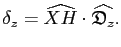
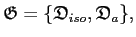
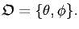

Next: Spherical diffusion tensor Up: Spheroidal diffusion tensor Previous: The correlation time gradients Contents Index
The second partial derivatives with respect to the geometric parameter  twice are
twice are
|  |
The second partial derivatives with respect to the geometric parameters  and
and
 are
are
|  |
The second partial derivatives with respect to the geometric parameter
 twice are
twice are
|  |